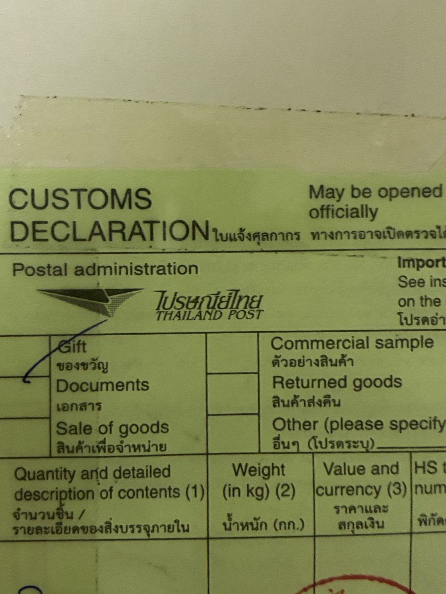
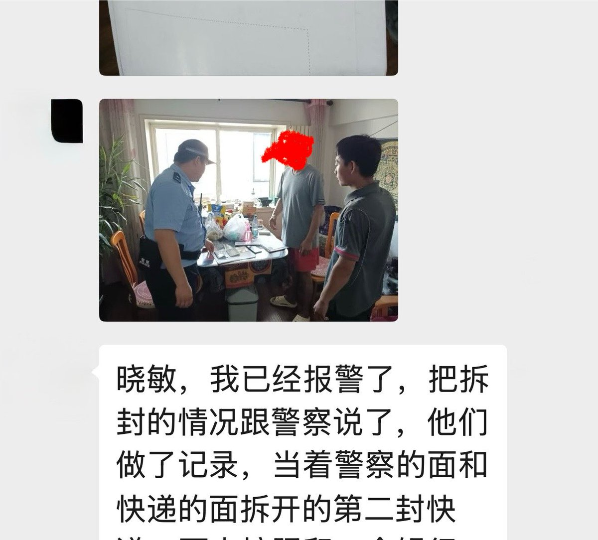
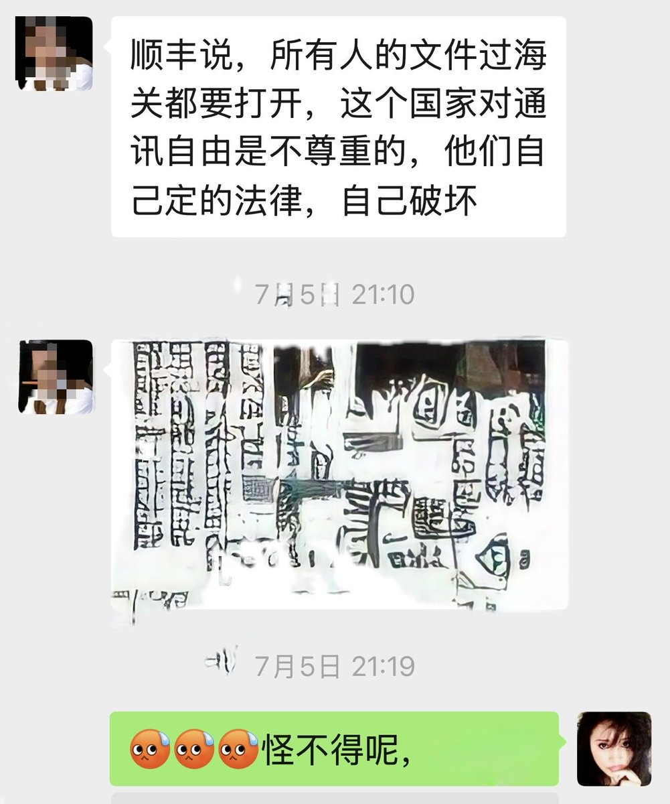
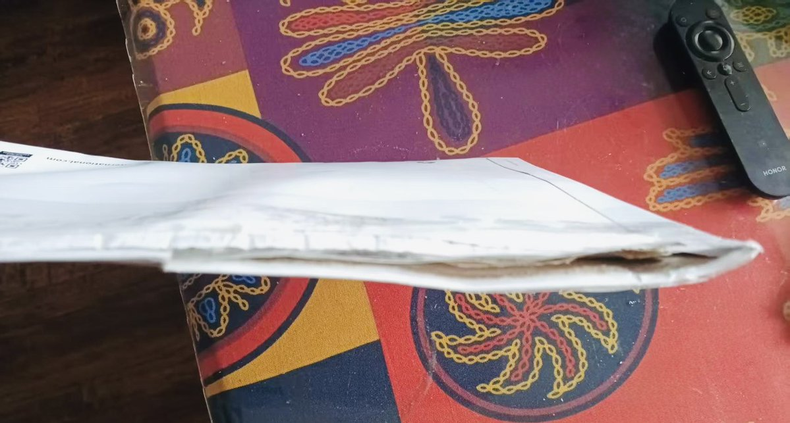
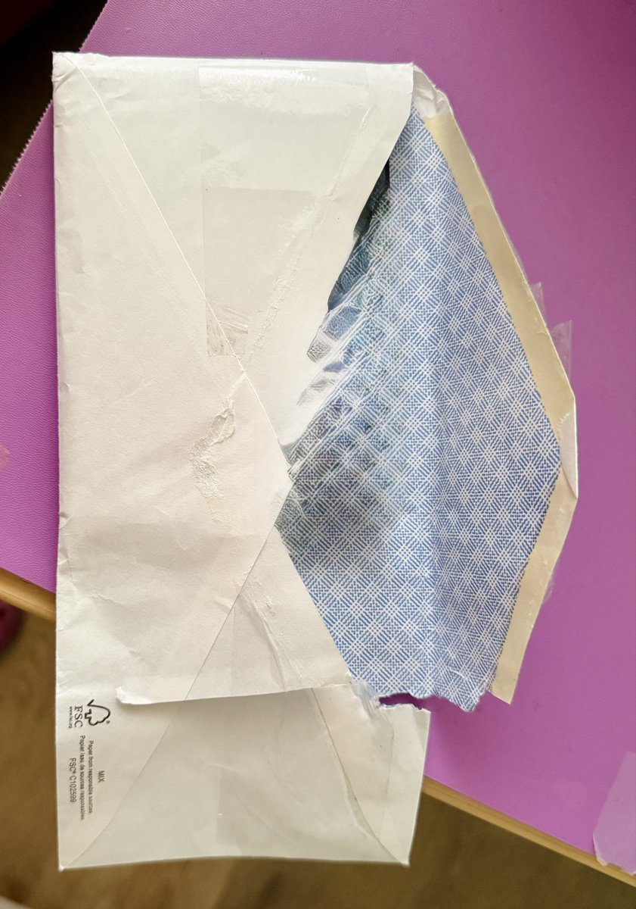

顺丰我不清楚
不过用任何一个国家邮政寄出到任何国家的信件/包裹的报关单上都会有“May be opened officially”（可能会被官方开拆查验）或类似意思的字样

不过用任何一个国家邮政寄出到任何国家的信件/包裹的报关单上都会有“May be opened officially”（可能会被官方开拆查验）或类似意思的字样





气死我了！我寄了两份快递回中国🇨🇳，结果朋友收到的全部都是打开后又随便贴了一块胶布粘上，我一共寄了两份，都拆得跟烂狗肉一样😡这难道不是侵犯人权吗？
怎么可以把私人的信件随随便便全都拆开呢？而且手法特别粗暴，如果实在要拆，用一把剪刀文明一点不行吗？信封整个都被野蛮的撕烂了。 https://t.co/R11ocaM2wY
怎么可以把私人的信件随随便便全都拆开呢？而且手法特别粗暴，如果实在要拆，用一把剪刀文明一点不行吗？信封整个都被野蛮的撕烂了。 https://t.co/R11ocaM2wY